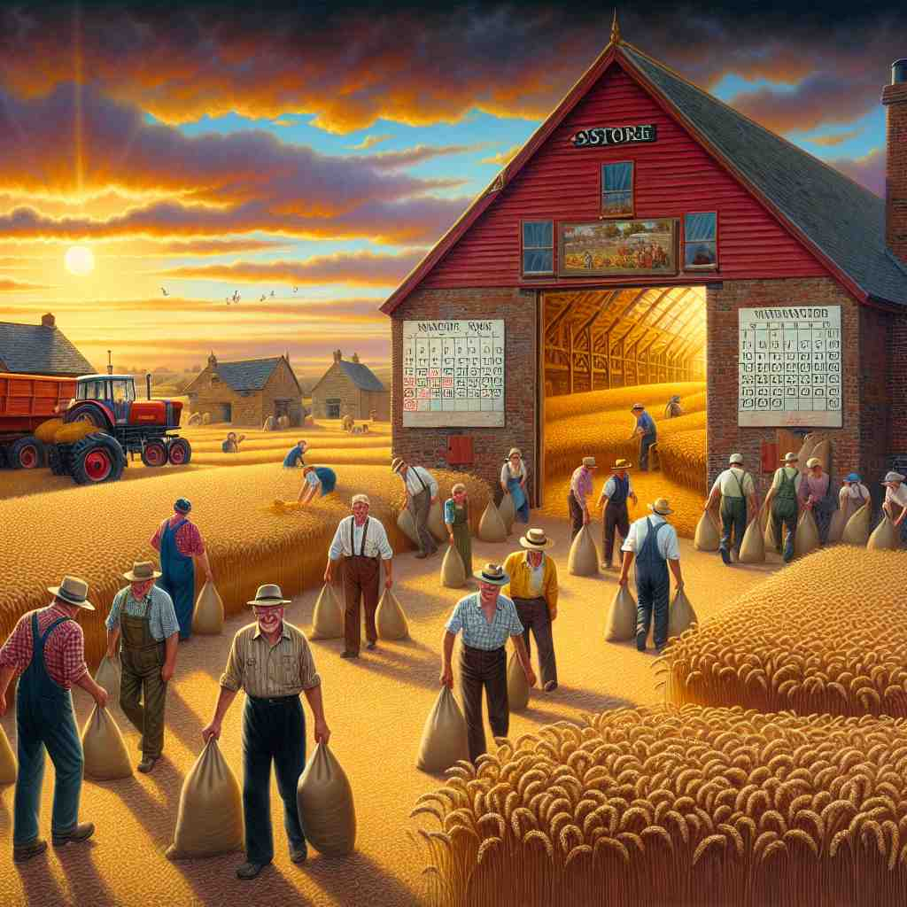

💬 She needs to store food in the fridge to keep it fresh. 她需要把食物存放在冰箱里以保持新鲜。

💬 Farmers work hard to store the harvest in the barn. 农民们努力将收获储存到谷仓中。
💬 She needs to store food in the fridge to keep it fresh. 她需要把食物存放在冰箱里以保持新鲜。
💬 Farmers work hard to store the harvest in the barn. 农民们努力将收获储存到谷仓中。
🔈 [stɔː]
💬 I store my toys in a big box. 我把我的玩具存放在一个大盒子里。
🔍 存放: 想象一下，你有很多玩具，比如小汽车、积木、毛绒玩具等等。你把这些玩具都放进一个大盒子里，这样它们就不会乱放了。这个“放”的动作，就是“store”。就像小松鼠把坚果藏在树洞里，防止冬天没有食物吃，这也是“store”。
💬 The supermarket stores a lot of food. 超市储存了大量的食物。
🔍 储存: 超市里有各种各样的食物，比如水果、蔬菜、零食、饮料等等。这些食物都摆放在货架上，等待人们购买。超市把这些食物放在那里，以便顾客随时可以买到，这就是“store”。就像冰箱里储存了很多食物，以备不时之需。
💬 Computers store information. 计算机存储信息。
🔍 存储: 你可以在电脑上写字、画画、看视频，这些东西都保存在电脑里。下次你打开电脑的时候，这些东西还在，这就是电脑“store”了信息。就像你的大脑记住了很多东西，比如你的名字、你的家在哪里，这也是一种“store”。
💬 We can store our winter clothes in the closet during summer. 我们可以在夏天把冬天的衣服存放在衣柜里。
🔍 存放: 夏天天气很热，我们不需要穿冬天的厚衣服，所以可以把它们叠好，放进衣柜里，等到冬天再拿出来穿。这个把衣服放进衣柜里的动作，就是“store”。
🧠 “store” 的核心意思是把东西放在某个地方保存起来，以便以后使用或需要的时候再拿出来。
⬅️ keep（保存）、save（保存）： “store” 和 “keep” 都表示保存东西，但 “store” 更强调把东西放在特定的地方保存。“save” 也有保存的意思，但它更强调为了避免浪费或损失而保存。
🔀 discard（丢弃）、throw away（扔掉）：与 “store” 相反的动作是把东西丢掉或扔掉，不再保存。
🌳 词根 'stor' 源自拉丁语 'staurāre'，意为储存。后形成名词 'store' 表示 '商店' 或 '储存'。
💡 记住 'store' 可以联想为 'storage' 的缩短形式，因为商店本身也是商品的储存地。
🗝️ n. a place where goods are sold 出售商品的地方
🎭 在一个繁华的购物中心，一家五光十色的商店中，顾客们正忙着挑选商品，检查价格，然后排队付款。这是'store'作为出售商品的地方的生动场景。
💬 I'm going to the grocery store to buy some milk. 我去超市买一些牛奶。
🤔 源于存放商品以供销售的地方
🗝️ n. a supply or stock of something 某物的供应或存货
🎭 在一个科学实验室里，研究员打开储藏室，里头满是各种化学药剂和实验工具，确保它们在需要时都有足够的库存。这种情况说明了'store'作为某种供应或库存的意思。
💬 He has a large store of knowledge about history. 他对历史有丰富的知识积累。
🤔 存放起来的物品总称
🗝️ v. to fill or supply 填充或提供
🎭 在一个餐馆的后厨里，经理正在指挥员工将新到的食材放入储藏室，以此补充上周用完的库存。这代表了'store'作为填充或提供的含义。
💬 The shelves were stored with books. 书架上放满了书。
🤔 将物品存放到某处
🗝️ v. to retain information in memory 在记忆中保留信息
🎭 在一间安静的书房里，一个学生正在心无旁骛地背诵诗歌，努力将每一句诗都牢牢记在心里。这个过程展示了'store'作为在记忆中保留信息的意思。
💬 The brain stores memories of past experiences. 大脑储存着过去经历的记忆。
🤔 将信息存储在大脑中
🗝️ n. computer memory for saving data 用于保存数据的计算机内存
🎭 在一个现代化的办公室中，一名IT技术人员正坐在电脑前，确保所有重要文件都安全地保存在电脑的存储器中，以备后续调用。这是'store'作为计算机内存用于存储数据的实际应用。
💬 This laptop has 512GB of storage. 这款笔记本电脑具有512GB的存储空间。
🤔 计算机中存储数据的地方